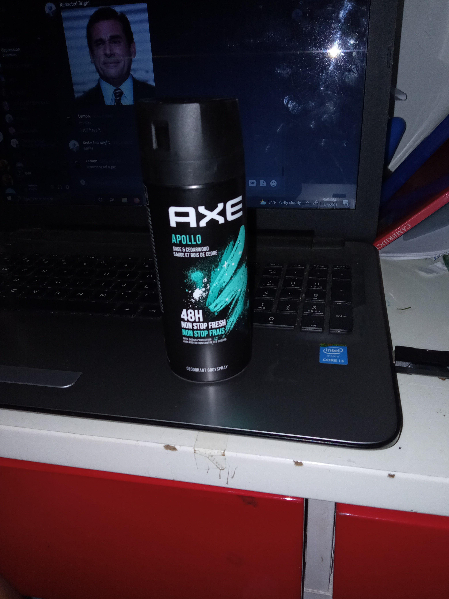
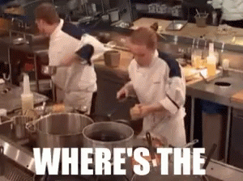

THE BIBBLE ARCHIVES
Preferred for visiting on mobiles
The Prodigal Child

The most longest and historical image of the Bibble community is of the Prodigal Child - Theodore the 135th themselves. This is the longest archived image in the Archives and holds a special place among the Bibble Unitatis
Brother Mendez
The Wisest being amongst all, the father of the Holy Bibble Community. He is the man who took us under his wing and taught us the ways of the streets. He gave us flour to eat for Breakfast, Evening and Dinner.
Theodore the First
The only one that comes before The Prodigal Child themselves is the First and only one that could've opened the doors for such strong and mystical species to exist in the first place. We must thank the God for blessing us with Theodore to help us through the hardships. Aameen!
Axe Bottle

Old as time and as wise as Jesus - its the Axe Bottle that never vanishes. It is prophesised that the Beholder of this very here bottle is destined for greart glory and mass blessings from the Bread Loving Theodore themselves.
Chip
Chip! Nothing more and nothing less. Be thankful for what you have, and also praise the Lord for blessing this very here fine man with this extremely perfectly shaped and extremly nutritional ovesized chip that will help him throught out his very fine and extremely cool day.
Whomst has awakened the Ancient One
None shall awaken the Ancient one, for its slumber brings us the goods of nature and the fruits of yes. We must allow it slumber as peacefully and we must provide it with solace when it awakens so that it will proceed on giving us these very fine goods that keep us going with our days.
Socialism is for everyone
This very here GIF symbolises to us the importance of socialism amongst each other. Even the capitalists will have to socialize to make friends. Therefore this GIF is a very good representation of the hardships socialism helps you to get through. (I have no idae what this says, ples don't kill me)
Where is the Lamb Sauce???!!!

WHERE IS THE LAMB SAUCE??? How many more times does the chef have to repeat it for one of ye lot to bring the God Damn Lamb Sauce! Honestly mate at this point you are as much of a disappointment and failure to us other than that one time you tripped and fell at a mountain.
Take this~

Use this very fine GIF here when you are losing a battle. This is basically the UNO Reverse of the Bibble Community. The first ever known use of this very fine here GIF is undocumented so you will have to believe that it was first used in 2020. I know the cursed year with all the Corona and all.
Sally Volcany
GOD dAMN somebody toucha my spaghett. Either fall over laughing or in disappointment. Understand that the guy laughs and falls over, at the moment the guy can literally break dance in a moment notice, thats how cool he is! GET IT!